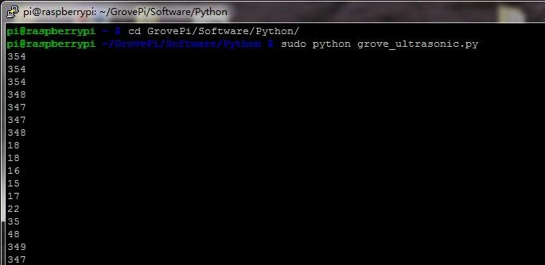

This Grove - Ultrasonic sensor is a non-contact distance measurement module which works at 42KHz, suitable for projects that require middle distance measurement.

| Parameter | Value/Range |
|---|---|
| Operating voltage | 3.3~5V |
| Operating current | 15mA |
| Ultrasonic frequency | 42kHz |
| Measuring range | 3-400cm |
| Resolution | 1cm |
| Output | PWM |
<iframe style="height: 510px; width: 100%; margin: 10px 0 10px;" allowTransparency="true" src="https://codebender.cc/embed/sketch:97163" frameborder="0"></iframe> Here we demonstrate how to use Grove - Ultrasonic Ranger to obtain distance message.
Connect Serial LCD to D4/D5 pins of Grove - Base Shield and connect Ultrasonic Ranger to D7.
Download the UltrasonicRanger Library and SerialLCD Library from Github. For this libraries, rather than from Arduino library files, they are from other pages. You need to install them to Arduino Library. Please refer to the course"How to install library" of wiki page to learn the specific steps.
open code from the path：File->Examples->UltrasonicRanger->examples->UltraDisOnSeeedSerialLcd and upload.
/***************************************************************************/ // Function: Measure the distance to obstacles in front and display the // result on seeedstudio serialLcd. Make sure you installed the // serialLCD, SoftwareSerial and Ultrasonic library. // Hardware: Grove - Ultrasonic Ranger, Grove - Serial LCD // Arduino IDE: Arduino-1.0 // Author: LG // Date: Jan 17,2013 // Version: v1.0 modified by FrankieChu // by www.seeedstudio.com /*****************************************************************************/ #include <SoftwareSerial.h> #include <SerialLCD.h> #include "Ultrasonic.h" SerialLCD slcd(11,12); Ultrasonic ultrasonic(7); void setup() { slcd.begin(); } void loop() { long RangeInCentimeters; RangeInCentimeters = ultrasonic.MeasureInCentimeters(); delay(150); slcd.clear(); slcd.setCursor(0,0); slcd.print("The distance:"); slcd.setCursor(0,1) ; slcd.print(RangeInCentimeters,DEC); slcd.setCursor(5,1) ; slcd.print("cm"); }
Also we shot a video about it. Find it in the Resources! It can give you a more straightforward instruction.
Sensing the Distance (Ultrasonic Ranger Sensor)
This example shows how to measure the distance to obstacles using the ultrasonic sensor and display the value on a 4-Digital-Display (centimeters).
/* Ultrasonic-Ranger to 4-digit-display Measure the distance to obstacles in front and display the value on 4-digital-display The circuit: * Ultrasonic Ranger attached to SPI plug on Grove Base BoosterPack * one side pin (either one) to ground * the other side pin to +VCC * LED anode (long leg) attached to RED_LED * LED cathode (short leg) attached to ground * Note: This example code is in the public domain. http://www.seeedstudio.com/wiki/Grove_-_Ultrasonic_Ranger */ #include "TM1637.h" #include "Ultrasonic.h" /* Macro Define */ #define CLK 40 /* 4-digital display clock pin */ #define DIO 39 /* 4-digital display data pin */ #define BLINK_LED RED_LED /* blink led */ #define ULTRASONIC_PIN 38 /* pin of the Ultrasonic Ranger */ /* Global Variables */ TM1637 tm1637(CLK, DIO); /* 4-digital display object */ Ultrasonic ultrasonic(ULTRASONIC_PIN); /* Ultrasonic Ranger object */ int distance = 0; /* variable to store the distance to obstacles in front */ int blink_interval = 0; /* led delay time */ int8_t bits[4] = {0}; /* array to store the single bits of the value */ /* the setup() method runs once, when the sketch starts */ void setup() { /* Initialize 4-digital display */ tm1637.init(); tm1637.set(BRIGHT_TYPICAL); /* declare the red_led pin as an OUTPUT */ pinMode(RED_LED, OUTPUT); } /* the loop() method runs over and over again */ void loop() { distance = ultrasonic.MeasureInCentimeters(); /* read the value from the sensor */ memset(bits, 0, 4); /* reset array when we use it */ for(int i = 3; i >= 0; i--) { /* get single bits of the analog value */ bits[i] = distance % 10; distance = distance / 10; tm1637.display(i, bits[i]); /* display by 4-digital display */ } delay(100); }
First step,you should connect Ultrasonic to Port D4. Run the program below. It will print distance information on you terminal,as the figure below.

# GrovePi + Grove Ultrasonic Ranger from grovepi import * # Connect the Grove Ultrasonic Ranger to digital port D4 # SIG,NC,VCC,GND ultrasonic_ranger = 4 while True: try: # Read distance value from Ultrasonic print ultrasonicRead(ultrasonic_ranger) except TypeError: print "Error" except IOError: print "Error"
cd GrovePi/Software/Python/
sudo python grove_ultrasonic.py
If you want to make some awesome projects by Grove - Ultrasonic Ranger, here's some projects for reference.
This is an IoT demo make by Arduino and Grove.
There are many ways like using a float sensor to determine the water level, or using probes to detect peak and low level in the tank. How to measure water level without using probe or contacting with water? yeah there is a way just using a Ultrasonic sensor, this is very simple where the level of water is measured using ultrasonic sensor which gives the depth , by determining the tank depth we can set the maximum and minimum level.
This is an IoT demo make by Seeeduino and Grove.
Make an indoor lightning Cloud, hang it up right over your door mat, blast whoever passing under it, feel the the beauty of nature in the house.

This is an IoT demo make by Seeeduino and Grove.
Our artist Shihui Wang recently showed me her another amazing work of art: the Colour Helix. Again with few simple components she presented us the beauty of the combination of art and electronics.
With a Grove - Ultrasonic Ranger she can magically control the number of illuminated LEDs inside the Helix by raising or lower her palm in the air.

Copyright (c) 2008-2016 Seeed Development Limited (www.seeedstudio.com / www.seeed.cc)